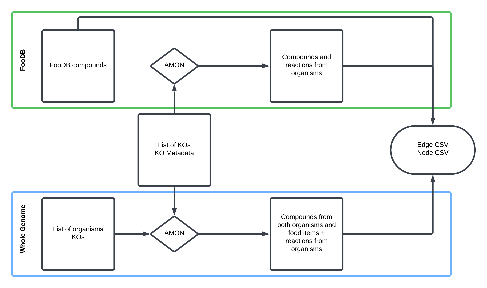

Running the Pipeline
This pipeline converts dietary data (e.g., FFQs) and microbial gene information into a graph structure that can be analyzed for metabolic interactions between food and microbes.
Creating a Machine-Readable FFQ
From FFQs to Machine-Readable Data
Food Frequency Questionnaires (FFQs) are a common method for assessing dietary intake. These surveys capture how often and how much participants consume specific foods. However, FFQs are not directly usable in computational workflows due to several challenges:
- Heterogeneity: Formats vary widely (e.g., 24-hour vs. 6-month recall, portion sizes vs. frequency scales)
- Lack of molecular resolution: Foods must be represented at the compound level (i.e., chemical composition at consumption)
- Inconsistent structure: Data must be standardized for downstream processing
To address this, a Streamlit web application was developed to generate standardized, machine-readable FFQ-like datasets. These datasets map food items to compounds using either FooDB or KEGG.
No FFQ Available
You can run the pipeline without an FFQ by using all foods available in FooDB:
- Manual execution: Skip food metadata creation in Step 3A (Get all associated compounds)
- Workflow execution: Use flags
foodbandall-foods - Note: Food compound reports are skipped due to dataset size
Step 1: Launch the Streamlit application
In terminal streamlit run src/get_foods.py
Workflow: 1. Search for and select foods 2. Assign a consumption frequency (1–100%) 3. Download the generated dataset 4. Shut down the application
Step 2: Choose a Compound Source
Option A: FooDB (Experimental Data)
FooDB is a database of compounds identified in foods via LC-MS experiments. Many compounds are linked to external resources such as KEGG.
Not all compounds in FooDB map to KEGG. Typically, core metabolic compounds (e.g., amino acids, sugars, fatty acids, nucleotides) are included, while specialized plant compounds (e.g., flavonoids, alkaloids, terpenes) may not be fully represented.
Limitations: - Incomplete compound coverage - Limited food representation - Based on foods commonly found in the U.S.
Option B: KEGG Organisms (Genome-Based Prediction)
Compounds can be inferred from an organism’s genome (e.g., apple) based on its metabolic capabilities using KEGG organism data.
Limitations: - Requires decomposition of complex foods into individual components - Does not account for processing conditions (e.g., ripeness, cooking) - Predictions may not reflect actual composition
Step 3: Creating the Graph
Given your 3 main inputs (list of KOs, KO metadata, and machine readable FFQ) you can choose to find compounds associated with your food items through metabolomics database FooDB or by predicting compounds from whole genomes using KEGG organisms.
Ultimately this will be to create node and edge files that can be used to create graphs in memory.

Note
AMON is a tool which takes a list or two of KOs and finds compounds that can be created by them using KEGG reactions and assigns their origin.
Step 3A: FooDB Workflow
1. Generate Food–Compound Metadata
Skip if using all FooDB foods (Data/AllFood/food_meta.csv available)
Rscript src/Metabolome_proc/comp_FoodDB.R \ --diet_file "Data/test_sample/foodb_foods_dataframe.csv" \ --content_file "Data/Content.csv" \ --ExDes_file "Data/CompoundExternalDescriptor.csv" \ --meta_o_file "food_meta.csv"
Output: Food items mapped to KEGG compound IDs with aggregated consumption frequencies.
2. (Optional) Generate Food Compound Report
Skip if using all foods (file too large)
python src/Metabolome_proc/RenderCompoundAnalysis.py \ --food_file "food_meta.csv" \ --output "food_compound_report.html"
3. Run AMON (Microbial KOs)
amon.py \ -i "Data/test_sample/noquote_ko.txt" \ -o "AMON_output/" \ --save_entries
4. Create Graph Data (Nodes and Edges)
python src/Metabolome_proc/main_metab.py \ --f "food_meta.csv" \ --r "AMON_output/rn_dict.json" \ --m_meta "Data/test_sample/ko_taxonomy_abundance.csv" \ --e-weights \ --n-weights \ --org \ --a "Abundance_RPKs" \ --o "graph/"
Step 3B: Whole Genome Workflow
1. Map Organisms to KOs
python src/WholeGenome_proc/comp_KEGG.py \ -i "Data/test_sample/kegg_organisms_dataframe.csv" \ -k "org_KO/" \ -o "food_item_kos.csv"
2. Run AMON (Microbial + Food KOs)
amon.py \ -i "Data/test_sample/noquote_ag_sample.txt" \ -o "AMON_output/" \ --other_gene_set "org_KO/joined.txt" \ --save_entries
3. Create Graph Data (Nodes and Edges)
python src/WholeGenome_proc/main_geno.py \ --f_meta "food_item_kos.csv" \ --m_meta "Data/test_sample/ko_taxonomy_abundance.csv" \ --mapper "AMON_output/kegg_mapper.tsv" \ --rn_json "AMON_output/rn_dict.json" \ --e-weights \ --n-weights \ --org \ --a "Abundance_RPKs" \ --o "graph/"
4. Generate Food Compound Report
python src/WholeGenome_proc/RenderCompoundAnalysis.py \ --node_file graph/WG_nodes_df.csv \ --output food_compound_report.html
Step 4: Microbial Compound Report (Optional)
If microbial taxonomy and abundance data are available:
python src/RenderCompoundAnalysis_Microbe.py \ --node_file graph/nodes.csv \ --edge_file graph/edges.csv \ --output microbe_compound_report.html
Step 5: Build Graph and Extract Patterns
python src/run_graph.py \ --n graph/nodes.csv \ --e graph/edges.csv \ --o graph_results.csv
Patterns Identified: 1. Food → Microbe 2. Food → Both 3. Both → Both
Step 6: Visualize Graph Results
python src/RenderGraphResults_Report.py \ --patterns "graph_results.csv" \ --rxn_json "AMON_output/rn_dict.json" \ --output "graph_results_report.html"
Note
These are steps 2 through 4 of the general workflow found in the home page
Tip
Use the run_workflow.py wrapper script to run steps 3-4 automatically, see quick start example